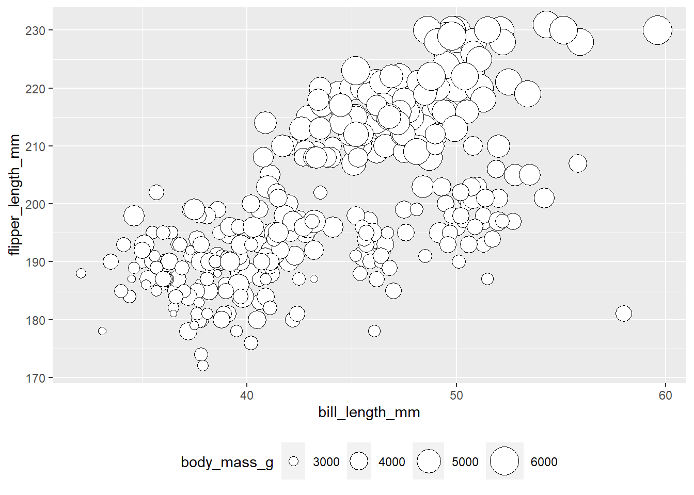
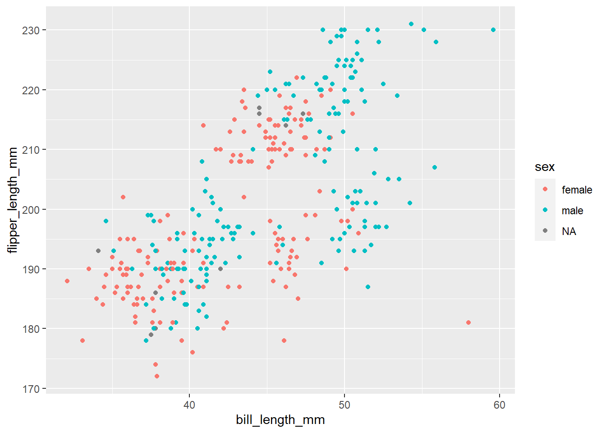
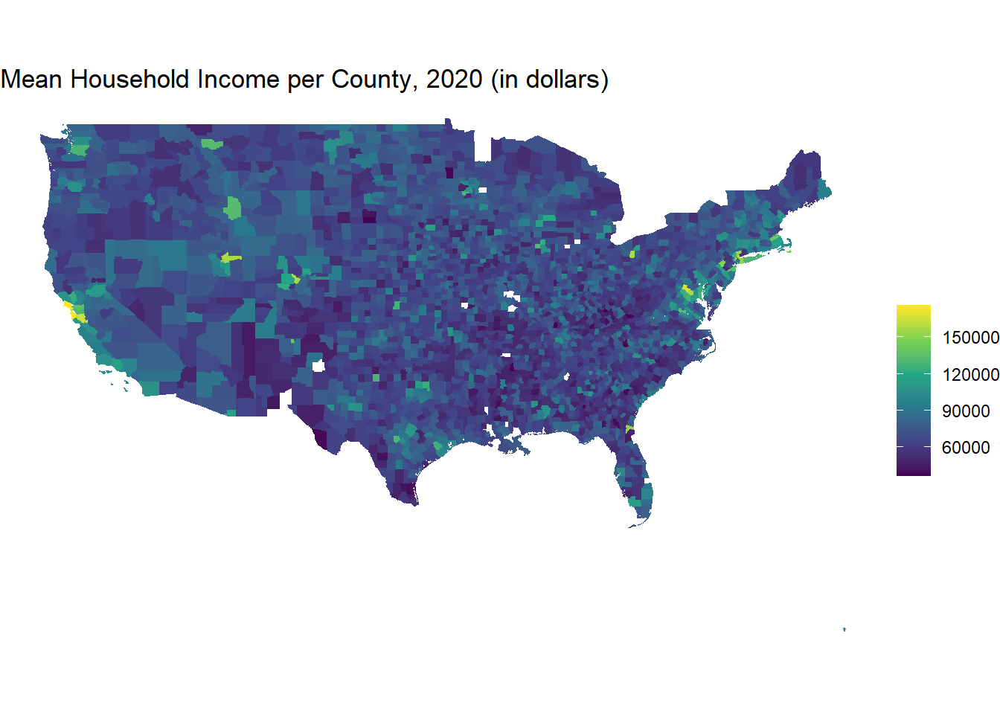
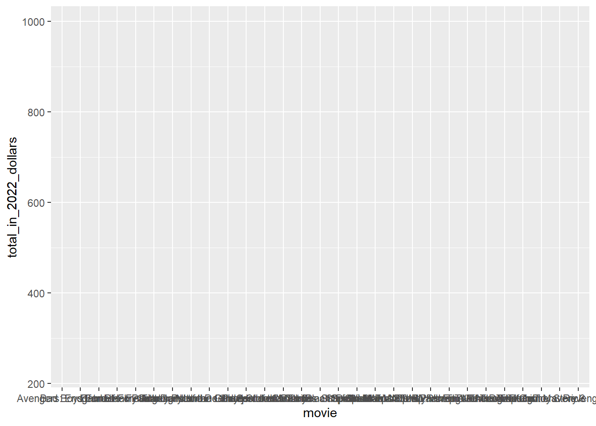
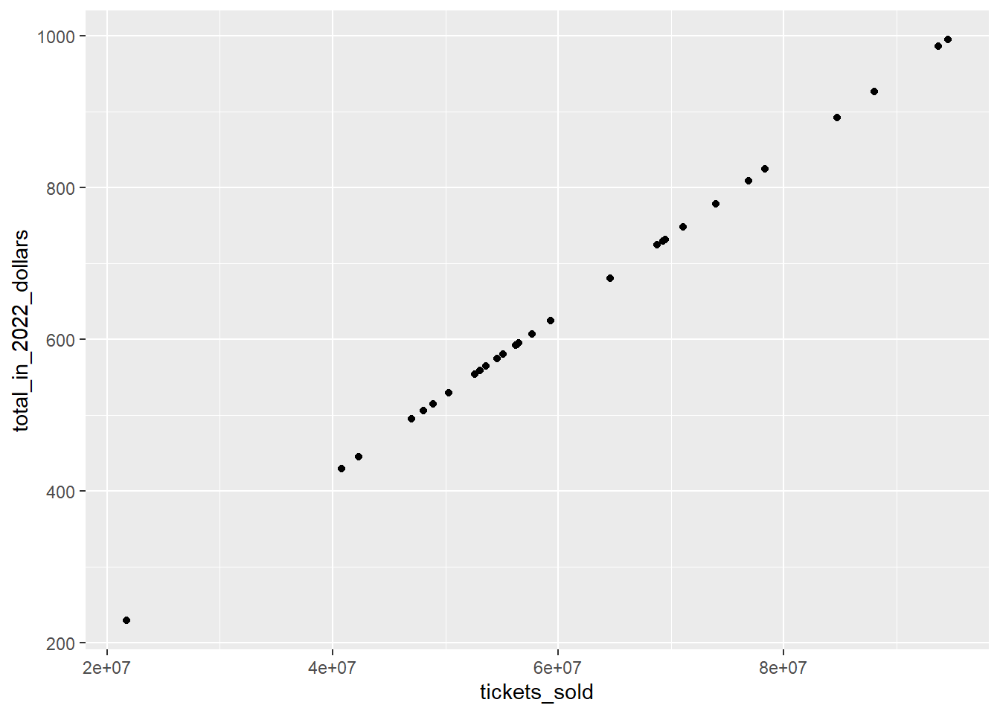
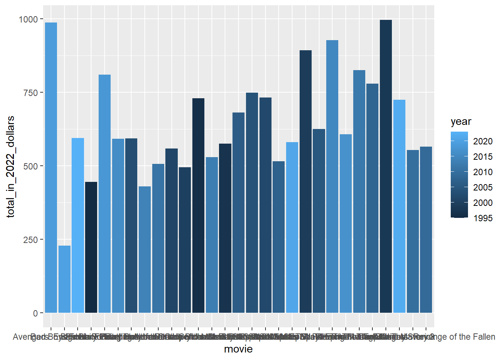

3 Data Visualisation 0
Data Visualisation Principles
This week, we’ll begin working with data visualisations. We’ll introduce in a very general sense the different ways we can draw things with data visualisation software. We won’t think too much about the specifics of making charts for different purposes - just get used to the general syntax and most common chart types.
Aims of Information Design
To begin with, we should think about the purpose of data visualisation. Essentially, the purpose is to aid cognition, usually of large-scale or complex data which otherwise is difficult to grasp. Some examples of how it aids cognition include using infovis to:
Understand, explore and remember information
Take in large amounts of data at once
Make comparisons
Read millions of data points or understand complex structures (e.g. hierarchies or networks)
Understand temporal information, e.g. logic of going from earlier to later time
The reason data visualisation works is because our brains tend to make judgements about values based on visual elements. For example, if given two circles, one small and one big, and are asked which we think represents the larger value, you would likely pick the bigger one.
Similarly, we associate ‘hotter’ colours with larger values than colder ones.
We associate transparency or opacity with strength. And so forth..
We can use these principles in data visualisations. By mapping data to these visual elements, we can aid in the understanding of a given dataset by viewers.
Mapping Data to Aesthetics
Another word for these visual elements are aesthetics. There are many possible aesthetics, but some of the most commonly-found in infovis are:

Another important one not pictured here is transparency.
We can use these aesthetics to tell lots of different stories within our data. For example, we can use them to indicate the magnitude of a value, to draw attention to different categories, or simply to highlight information we wish the viewer to pay attention to.
So how can we use each of these? Let’s look at some examples using a dataset containing observations about the physical characteristics of some penguins.
Position
All data visualisations need to be positioned in some kind of space. In this course, that space will be 2D, but 3D visualisations are also possible. In the example below, position is used to highlight a relationship between two variables. From a dataset of penguin observations, the bill length of the penguins is assigned to the x or horizontal position, and the flipper length is assigned to the y, or vertical position.
The resulting scatterplot shows clearly a relationship between the two variables: a larger bill generally means that the penguin also has larger flippers, and the other way around.
Size
Size is often mapped to amounts or magnitude (we naturally understand that these two things map together). In this case, we’ve taken the visualisation above, and mapped the body mass of each penguin to the size of the points. In this way, we can visualise more pieces of information about the penguins.

Colour
Color can be used for many purposes in visualisations. Here, it is used to distinguish between two categories: male and female penguins.

Linetype/width
Here, linetype is used to distinguish between the sex attribute.
Shape
Shape is usually used to distinguish between categories. Here, the sex of the penguin is mapped to different shapes. This might be useful if colour was not an option, for example:
Transparency
Finally, transparency. Here, the opacity of the points are assigned to the body mass of the penguins.
Scales
In order to correctly map data to aesthetics, we use what are called scales. A scale defines a unique mapping between data and aesthetics. A scale might say, for example, each year of a line chart should correspond to exactly 50 pixels in a chart. One important distinction between data visualisation and say, graphic design, is that scales - what is mapped to data and how - need to be consistent within a chart.
How exactly the scales are picked depends on the type of data. Generally, there are two types of scales: continuous and discrete. Most of the time, these values are picked by ggplot2 software for you, but understanding how they work is important.
Continuous scales are ones where arbitrarily small intermediates exist, for example time and weight. They are generally numerical, or quantitative data.
Discrete scales are ones where only finite numbers exist. Often, but not always, these are categorical, or qualititative data. For example, nationality, or the genre of a book.
However, discrete scales can be numerical too: for example, a count of your siblings (you can’t have 2.4 siblings).
Some aesthetics are generally only mapped to one or the other.
Size, for example, should usually be continuous - it needs a numerical value set to the size of something.
Shape is the opposite. It doesn’t make sense to map continuous variables to shapes - there are only a limited, set number of shapes.
Position can be either, which we’ll go through in examples later.
Colour Scales
Colour is perhaps the most complicated and interesting. Colour is frequently mapped to both continuous and discrete scales, but behaves differently depending on which one is used. For instance, a continuous colour scale would mean one where any possible value is possible. This is usually where something like hue is mapped to a numerical value. A discrete colour scale is one where colour is used to distinguish between categories.
To illustrate the difference between the two colour scales, take these two data maps of the US.
The first maps a discrete or qualitative piece of data: whether a county voted a majority for the Republican candidate in the 2020 election, or the Democrat.
The data being mapped is a simple text category, either ‘Republican’ or ‘Democrat’.
The correct colour scale for this is discrete. The colours are not mapped to a numerical value, but chosen to be easily distinguishable from each other, for each category. Red and green, used here, are on opposite sides of the colour wheel and are easy to distinguish (except for some of those with colour vision deficiency, but we’ll deal with that later).
Code
library(tidyverse)
library(sf)
us_counties = st_read('ne_10m_admin_2_counties/ne_10m_admin_2_counties.shp', quiet = TRUE)
election_2020 = read_csv('US_County_Level_Election_Results_08-20-master/2020_US_County_Level_Presidential_Results.csv')
election_2020 = election_2020 %>% distinct(county_name, .keep_all = TRUE) %>%
filter(!state_name %in% c('Alaska', 'Hawaii'))
us_map = us_counties %>%
inner_join(election_2020, by = c('NAME_ALT' = 'county_name'))
us_map = us_map %>%
mutate(result = ifelse(votes_gop > votes_dem, 'Republican', 'Democrat'))
us_map %>% ggplot() + geom_sf(aes(fill = result)) +
labs(fill = 'Result: ', title = "US Presidential Election Results by County, 2020") + theme_void()In this second map, we visualise the mean household income for the same set of US counties. This data value is quantitative and numerical.
The correct colour scale for this map is a continuous one. The range of values are mapped to a spectrum of colours running from dark blue to light yellow: the higher the income, the lighter the hue on this spectrum. In this way, we can easily distinguish the highest-income, the lower-income, and those in between.
Code
library(tidyverse)
library(sf)
us_counties = st_read('ne_10m_admin_2_counties/ne_10m_admin_2_counties.shp', quiet = TRUE)
county_data = usdata::county_2019
county_data = county_data %>%
filter(!state %in% c('Alaska', 'Hawaii'))
us_map = us_counties %>%
inner_join(county_data, by = c('NAME_ALT' = 'name'))
us_map %>%
ggplot() +
geom_sf(aes(fill = mean_household_income, color =mean_household_income)) +
theme_void() +
labs(fill = '', title = "Mean Household Income per County, 2020 (in dollars)") +
scale_color_viridis_c(guide = 'none') +
scale_fill_viridis_c()
We’ll return to colour scales in more detail, later in the course.
Putting this into practice
Similarly to last week, go to your Posit cloud workspace, and open the assignment called Week 3: data visualisation 0. As before, there is an existing .Rmd file, which contains the same code and text as this book chapter. You can use this to follow along and run the code yourself. For the exercises, create a new .Rmd file. Create new code cells and enter your answers within them. When you’re finished, knit and export the .Rmd and html output.
Load ggplot2
All the visualisations we create on this course will be made using a package for R called ggplot2. Before we do anything else, you’ll need to load this package. The easiest way to do this is load the ‘meta-package’ tidyverse, which will include ggplot2.
As last week, use library() to load the package:
library(tidyverse)The basis of all ggplot2 visualisations is a function called ggplot(). Think of this as the foundation of your visualisation. You’ll tell the ggplot() function what data it should use and which attributes of that data it should map to specific aesthetics.
The ggplot() function doesn’t produce any visualisation on its own, however. For that, you’ll need to add what are called ‘geoms’. A geom can be thought of as the further ‘layers’ you build on top of the ggplot() foundation.
In simple terms, geometries can be considered as shape types: some examples include columns, points, or lines. When we connect these to our data correctly, we’ll produce data visualisations.
Bar charts with geom_col
As an example, let’s draw a simple bar chart using ggplot. We want to make a simple bar chart from the top box office movies data we used last week: each movie will be a separate bar, organised horizontally, and the height of each bar should correspond to the total box office takings for that movie.
In ggplot, a bar chart is created using the geom geom_col(). geom_col(), like all geoms, has a set of aesthetics which must be specified. In this case, we must at least specific the x and y aesthetics. These correspond to the horizontal and vertical position of the bars. When we give these aesthetics to geom_col, it will automatically figure out what to do with them.
First, load the box office data as a dataframe:
top_movies = read_csv('top_movie.csv')Rows: 29 Columns: 6
── Column specification ────────────────────────────────────────────────────────
Delimiter: ","
chr (2): movie, distributor
dbl (4): year, total_for_year, total_in_2022_dollars, tickets_sold
ℹ Use `spec()` to retrieve the full column specification for this data.
ℹ Specify the column types or set `show_col_types = FALSE` to quiet this message.top_movies %>% kableExtra::kbl()| year | movie | distributor | total_for_year | total_in_2022_dollars | tickets_sold |
|---|---|---|---|---|---|
| 1995 | Batman Forever | Warner Bros. | 184.0311 | 445.4822 | 42306002 |
| 1996 | Independence Day | 20th Century Fox | 306.1693 | 729.4032 | 69269062 |
| 1997 | Men in Black | Sony Pictures | 250.6501 | 575.0207 | 54607854 |
| 1998 | Titanic | Paramount Pictures | 443.3191 | 995.3411 | 94524324 |
| 1999 | Star Wars Ep. I: The Phantom Menace | 20th Century Fox | 430.4434 | 892.2379 | 84732942 |
| 2000 | How the Grinch Stole Christmas | Universal | 253.3675 | 494.9832 | 47006948 |
| 2001 | Harry Potter and the Sorcerer’s Stone | Warner Bros. | 300.4044 | 558.8796 | 53074988 |
| 2002 | Spider-Man | Sony Pictures | 403.7064 | 731.6744 | 69484746 |
| 2003 | Finding Nemo | Walt Disney | 339.7144 | 593.2325 | 56337374 |
| 2004 | Shrek 2 | Dreamworks SKG | 441.2262 | 748.1662 | 71050925 |
| 2005 | Star Wars Ep. III: Revenge of the Sith | 20th Century Fox | 380.2706 | 624.6878 | 59324582 |
| 2006 | Pirates of the Caribbean: Dead Man’s Chest | Walt Disney | 423.3158 | 680.5367 | 64628368 |
| 2007 | Spider-Man 3 | Sony Pictures | 336.5303 | 515.0675 | 48914288 |
| 2008 | The Dark Knight | Warner Bros. | 531.0016 | 778.7530 | 73955652 |
| 2009 | Transformers: Revenge of the Fallen | Paramount Pictures | 402.1119 | 564.5651 | 53614916 |
| 2010 | Toy Story 3 | Walt Disney | 415.0049 | 553.8658 | 52598844 |
| 2011 | Harry Potter and the Deathly Hallows: Part II | Warner Bros. | 381.0112 | 505.9329 | 48046812 |
| 2012 | The Avengers | Walt Disney | 623.3579 | 824.6179 | 78311295 |
| 2013 | Iron Man 3 | Walt Disney | 408.9923 | 529.7280 | 50306552 |
| 2014 | Guardians of the Galaxy | Walt Disney | 333.0553 | 429.2622 | 40765637 |
| 2015 | Star Wars Ep. VII: The Force Awakens | Walt Disney | 742.2089 | 927.1008 | 88043765 |
| 2016 | Finding Dory | Walt Disney | 486.2956 | 591.9875 | 56219140 |
| 2017 | Star Wars Ep. VIII: The Last Jedi | Walt Disney | 517.2184 | 607.1694 | 57660910 |
| 2018 | Black Panther | Walt Disney | 700.0596 | 809.1797 | 76845177 |
| 2019 | Avengers: Endgame | Walt Disney | 858.3730 | 986.7541 | 93708843 |
| 2020 | Bad Boys For Life | Sony Pictures | 204.4179 | 228.7481 | 21723470 |
| 2021 | Spider-Man: No Way Home | Sony Pictures | 572.9848 | 580.1471 | 55094689 |
| 2022 | Top Gun: Maverick | Paramount Pictures | 718.7328 | 724.2351 | 68778260 |
| 2023 | Barbie | Warner Bros. | 594.8010 | 594.8010 | 56486324 |
In order to visualise this, we’ll tell ggplot to use the movie column as the x position, and the total_in_2022_dollars as the y position.
The first step is to tell the ggplot() function which dataframe it should use. To do this, set the data parameter to the top_movies object, as in the code cell below.
Next we tell ggplot which columns it should use, and which aesthetics it should map these columsn to. This is also done by passing the names as parameters to x and y. First, type a comma after the data = top_movies code. Then, insert the code aes(). This tells ggplot it should interpret anything within these parentheses as aesthetic mappings. Finally, within the aes(), we’ll add the columns and aesthetics: x = movie, y = total_in_2022_dollars:
ggplot(data = top_movies, aes(x = movie, y = total_in_2022_dollars)) 
At this point, we have an empty visualisation which specifies the aesthetics which should be mapped. In order to draw the correct geom, or visualisation shape, we need to add it as a layer on top of the ggplot() function. To do this, we add a plus sign (+) followed by the code geom_col():
ggplot(data = top_movies, aes(x = movie, y = total_in_2022_dollars)) +
geom_col()
Now, we have a simple bar chart. You’ll notice that the defaults ggplot chooses are not always great ones: the names are displayed horizontally and are drawn over each other. The movies are also ordered alphabetically. We won’t worry about this now, but these things are very easy to change later.
Scatterplots with geom_point
Next, let’s try another geom and see the difference. This time, we’ll draw a scatterplot. Scatterplots are often used to draw attention to some kind of relationship between two variables. In ggplot, scatterplots are drawn using geom_point(). As with geom_col, we need to at a minimum set the x and y aesthetics. In geom_point(), these refer to the x and y coordinates of the points. For our scatterplot, we want to plot the ticket sales against the takings, to see the relationship between the two.
As before, we start with ggplot(), and tell it what to use as the x and y:
ggplot(data = top_movies, aes(x = tickets_sold, y = total_in_2022_dollars)) +
geom_point()
Unsurprisingly, there’s an almost perfectly straight line: the more tickets sold, the higher the takings…
Line charts with geom_line
As a final example, let’s use geom_line(). This draws a line between points in some kind of order. It’s often useful to show some kind of trend, such as change over time.
We’ll draw a chart which draws a line through all the year values:
ggplot(data = top_movies, aes(x = year, y = total_in_2022_dollars)) +
geom_line()
In this example, the line chart clearly shows the huge drop in the first pandemic year, 2020.
Color
We can add new aesthetics to our visualisations as well as the positions (x and y). The most common additional one is colour, which can be used to represent a value in our data.
What is aes()?
This is a good point to explain why we put x and y within aes(). By doing so, we tell ggplot that it should look at the data, and relate the aesthetic to the data itself.
However in some cases, we just want to set all of the chart to a certain fixed value - the colour or transparency, for example. In this case, we put the aesthetics within the geom itself, and not within aes(), When we do this, we specify a particular value, rather than some value in the dataset.
As an example, here is how we would set all the columns in our first bar chart to blue. The aesthetic we use is fill, which sets the fill colour of the bars (to set the colour of the border, we would use the color aesthetic).
ggplot(data = top_movies, aes(x = movie, y = total_in_2022_dollars)) +
geom_col(fill = 'blue')However, in many cases we’ll want to map the colour to a value in the data. To do this, we will set the fill aesthetic within the aes(), as we did with x and y. To set the fill to the distributor column:
ggplot(data = top_movies, aes(x = movie, y = total_in_2022_dollars,fill = distributor)) +
geom_col()Now the column is coloured according to the distributor, and a legend has been automatically added.
Scales
The last important general point about ggplot is how it deals with different types of data. As mentioned above, data is generally found in either categorical or continuous forms. Categorical data that we have includes the distributor (a movie only has one distributor or another; it can’t be somewhere in between). Continuous data includes the box office totals (in principle, any value is possible). The year could potentially be interpreted as either.
Ggplot will automatically make some changes to some aspects of your plots depending on the data type.
In the bar chart above, the columns were coloured by a cattegorical variable: distributor. This means that ggplot gives a distinctive colour to each distibutor, so we can easily tell them apart. Let’s try, for the sake of it, to give it a numerical value. Ggplot will automatically interpret this as continuous:
ggplot(data = top_movies, aes(x = movie, y = total_in_2022_dollars,fill = year)) +
geom_col()
The difference is that now ggplot has chosen a sequential colour scheme: the colours run in a continuous hue from dark to light blue, depending on the numerical value of the year. Earlier years (lower values) have darker colours and higher values have lighter colours.
The interpretation of continuous and categorical data effects the scales too. Scales are the labels on the x and y axes.
A numerical (continuous) variable will by default be ordered in order of the values from low to high. Rather than write out every number, ggplot will display numbers as what it has chosen as a sensible interval. This is because we can infer other values in between.
A categorical (text) variable will be, by default, ordered alphabetically. Each separate value will be written out, because it doesn’t make sense to only include intervals, as we can with continuous data.
Exercises:
Time to practice. These exercises will get progressively more difficult, and for some you’ll need to refer to the introduction to R last week, as they involve basic data wrangling. Give yourself an hour, and just try and complete as many as you can - there’s no need to complete everything.
Create a new .Rmd file. Complete each exercise in code blocks within this. If you get stuck, the code answers for each are included. But please try to complete each without help first of all!
Exercise 1
Load the tidyverse package
Code
library(tidyverse)Exercise 2
Read the gapminder.csv data into R. You should have this file already on your local machine. To download it, click here. Upload it to your work space.
Save it as an object called gapminder_df
Code
gapminder_df = read_csv('gapminder_data.csv')Rows: 1704 Columns: 6
── Column specification ────────────────────────────────────────────────────────
Delimiter: ","
chr (2): country, continent
dbl (4): year, pop, lifeExp, gdpPercap
ℹ Use `spec()` to retrieve the full column specification for this data.
ℹ Specify the column types or set `show_col_types = FALSE` to quiet this message.Exercise 3
Open gapminder_df in your environment. Write the number of columns it contains in plain text (not within a code block).
Exercise 4
Restrict the data to latest year in the data: 2007. Call it a new object gapminder_2007_df.
In later exercises you’ll need to do this yourself, but for this first one I have given you the code. Copy the below code into a new cell in your .Rmd file and run it:
Code
gapminder_2007_df = gapminder_df %>% filter(year == 2007)Exercise 5
Using this newly-created dataframe, draw a bar chart which plots the country column horizontally and population as the bar height.
Code
ggplot(data = gapminder_2007_df, aes(x = country, y = pop)) +
geom_col()Exercise 6
In a new code cell, create a scatterplot. Assign the x position to the lifeExp column, and the y position to the gdpPercap column.
Code
ggplot(data = gapminder_2007_df, aes(x = lifeExp, y = gdpPercap)) +
geom_point()How would you interpret this data visualisation? Write the answer below your code.
Exercise 7
Make some adjustments to the scatterplot. Copy your existing scatterplot code to a new cell. This time, assign the pop to the size of the points, and the continent to the colour.
Code
ggplot(data = gapminder_2007_df, aes(x = lifeExp, y = gdpPercap, color = continent, size = pop)) +
geom_point()IF YOU GET TO THIS STAGE, WELL DONE!
The last few might take a bit longer to work out if you are a complete beginner. I also haven’t included the code solutions. You are welcome to try, or just stop here.
Exercise 8
Return to the original gapminder_df object.
Create a new object, gapminder_netherlands_df. Filter the full data to only include rows where the country is Netherlands.
Exercise 9
Draw a plot which shows the change in the lifeExp variable in the Netherlands over time.
You should choose an appropriate geom for your plot.
Exercise 10
Look at the dataframe in your environment, and choose a set of five countries. Filter the data (create a new dataframe object if needed) to only these five countries.
Draw a chart which compares the life expectancy of those countries and its change over time.
Exercise 11 (bonus, will require external information!)
Use summarise() to calculate the average life expectancy for each continent, for each year. Save this as a new object called average_life_exp.
This chart should contain four separate panels: one for each of the continents of Asia, Europe, Americas, and Africa (e.g., you need to remove Oceania). For each panel, use a line chart to separately display the change in life expectancy over time, for each country. Use the original gapminder data for this. Render the data for each country as a thin, black line.
Next, use the dataframe with the averages you created above to draw an extra layer, of the average life expectancy. This should be drawn as a thicker, blue line, with an opacity (alpha) of 50%.
To do this, you’ll probably need the following information:
To render each country’s data as a separate line, you’ll have to specify the
group = countrywithin theaes().To render each continent as a separate panel, you’ll need the layer facet_wrap(). You can find out more information about how to use this here: https://ggplot2-book.org/getting-started#sec-qplot-faceting
To add both the individual and average values to the plot, you’ll need to add them both as separate layers. This is done using the + symbol. However, because each layer is using a separate data source, rather than include the information on aesthetics and so forth within the ggplot() function, you’ll need to move this information, in the same format, to each of the individual
geom_layers.
If you’d like another challenge:
- Re-do the above, but don’t create a new dataframe with the averages. Include the averages as an additional column in the original dataframe. You’ll need to use
group_by()andmutate()for this. You’ll also need to adjust the ggplot code.
Finished?
Render your .Rmd file, and submit the .Rmd and the html output under the weekly task.
If you struggle with ‘knitting’ the .Rmd file because of errors, just submit the .Rmd file on its own.